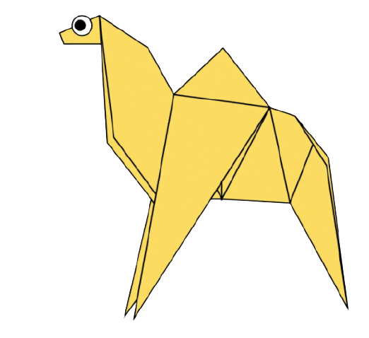
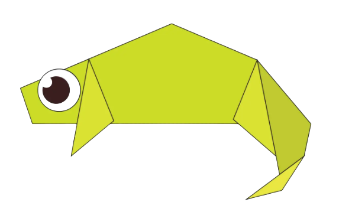
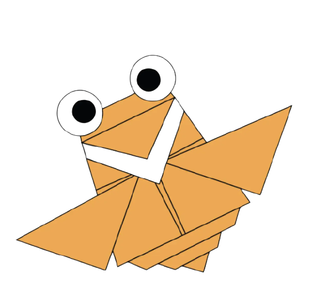
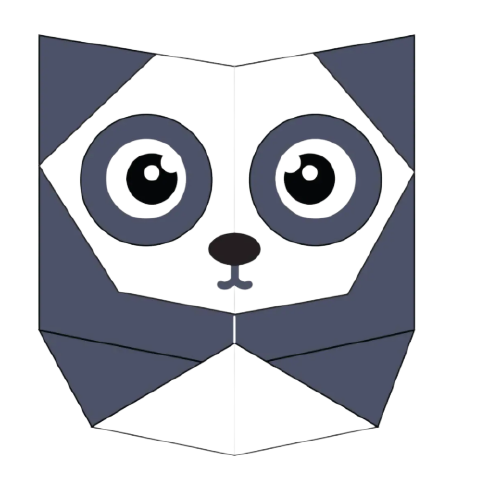
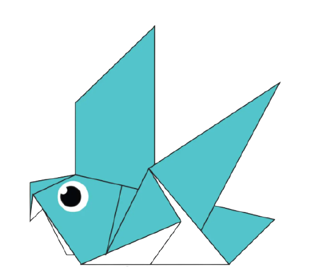

Origami Designs
About Me
Fallow Us

interesting facts about camel
- Camel's ears are furry
- Camel can move easily across the sand becouse of its specially Designed feet
- When thay find water,they will drink as much as possible.

interesting facts about chameleon
- Chameleons are reptiles that are part of the iguana suborder
- Changing skin color is an important part of communication among Chameleons
- Most Chameleons have a [rehensile tail that they use to wrap around tree branches

interesting facts about flying-cicada
- Cicadas can survive a huge fall as babies, or nymphs.
- They're true bugs (from the order Hemiptera)
- Most have red-orange eyes.

interesting facts about panda
- A giant panda is much bigger than your teddy bear
- An adult can eat 12–38 kilos of bamboo per day.
Pandas are "lazy" — eating and sleeping make their day.

interesting facts about pigeon
- Pigeons are incredibly complex and intelligent animals
- Pigeons have excellent hearing abilities
- Pigeons are renowned for their outstanding navigational abilities

How To Make Teddy-bear ??
- - Teddy bears got their name from the story that Teddy Roosevelt refused to shoot a bear cub while on a hunting trip in 1902.
- - The first toy stuffed bear was created by German toymaker Margarete Steiff.
She created a soft plush with movable arms and legs and a friendly face after taking her nephew to the zoo in 1903.
- - The Oxford English Dictionary dates the first use of the term teddy bear to 1906.

interesting facts about butterfly
- Most butterflies don't live very long
- Butterflies have four wings, not two as you may think
- The lifecycle of a butterfly is in four stages: egg, caterpillar, pupa and adult butterfly.